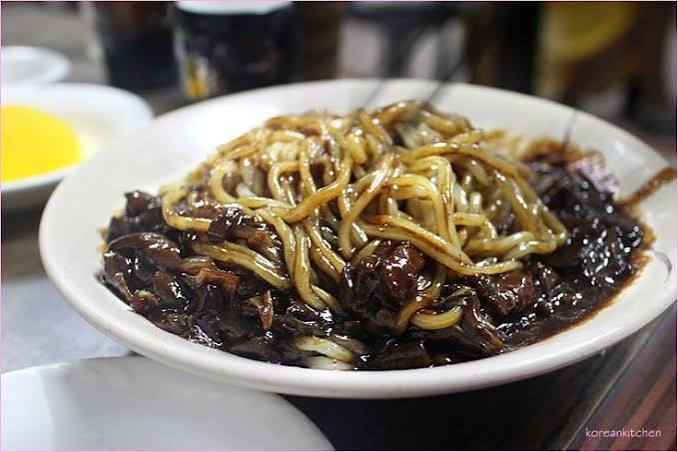

Liste Articles
Jajangmyeon
Le jajangmyeon est un plat emblématique de la cuisine coréo-chinoise. Il se compose de nouilles de blé épaisses et élastiques, nappées d'une sauce noire, épaisse et brillante à base de pâte de haricots noirs fermentés.
| Nom | Image | Prix |
| Jajangmyeon |  | 13€ - 19€ |
Menu